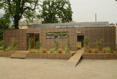

Un quart des émissions de CO2 provient du secteur du bâtiment. 80% de ces gaz sont émis lors de l’utilisation du chauffage. A l’échelle d’un bâtiment, ces rejets sont plus ou moins importants selon sa conception (orientation bioclimatique, compacité, inertie, isolation etc.), la source d’énergie utilisée pour le chauffer, ainsi que son efficacité. Mais notre comportement, plus ou moins sobre, a aussi une incidence sur les émissions de ces Gaz à Effet de Serre, GES pour les intimes…
La construction, proprement dite, représente, quant à elle, près de 20 % des émissions de GES du cycle de vie du bâtiment. Sont en cause l’énergie nécessaire à leur production (énergie grise), leur transport et l’énorme quantité de déchets produits.
Les bâtiments anciens étant particulièrement énergivores, un immense chantier de rénovation énergétique doit s’amorcer en France. L’objectif doit être fixé à 400 000 logements par an si on veut pouvoir limiter les changements climatiques. Avec les aides nécessaires, les Français pourront ainsi vivre dans des logements plus confortables, plus sains et payer des factures réduites.
Les nouveaux bâtiments vont également devoir relever le défi de la performance environnementale, jusqu’à devenir passifs (bâtiment n’ayant plus besoin de système de chauffage central car bénéficiant des apports gratuits du soleil, de la chaleur dégagée par les habitants et par les appareils électriques !), voir même à énergie positive, grâce à l’utilisation d’énergies renouvelables pour le chauffage et l’électricité.
Les critères écologiques devront être pris en compte dans le choix des matériaux : peu d’énergie grise, recyclés et recyclables, non toxiques et si possibles locaux. Les composants organiques provenant de cultures (tel que le chanvre) ou de forêts gérées durablement (bois certifiés FSC ou provenant de forêts locales) devront être privilégiés car ils possèdent l’énorme avantage d’être des puits de carbone. Une conception du bâtiment intelligente peut ainsi permettre de favoriser des modes de vie plus durables. |
 |
Nous poussons à une plus grande prise en compte de l’environnement dans le bâtiment à travers différentes actions :